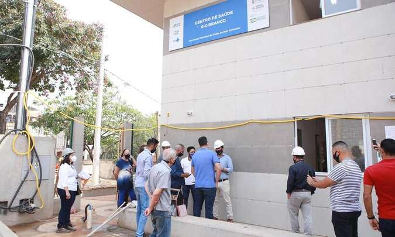

Fiscalização
Vereadores fiscalizam obras e condições de Unidades de Saúde de BH

As visitas de fiscalização começaram na terça (14/9), na região de Venda Nova, em BH, e terão sequência na quarta, na Pampulha
Vereadores que integram a Comissão de Saúde e Saneamento da Câmara de BH visitaram nesta terça-feira (14/9) duas unidades de saúde da capital, uma em Venda Nova e a outra na Pampulha. O objetivo é conferir andamento de obras e disponibilidade de equipamentos, de profissionais de saúde, bem como espaço físico e horário de funcionamento. De acordo com a Comissão, a primeira vistoria foi às 9h30 desta terça (14), tendo por finalidade fiscalizar o andamento das obras para a construção do novo Centro de Saúde Visconde do Rio Branco, na Região de Venda Nova. No dia 15/9 será a vez de visitar a Unidade de Pronto Atendimento (UPA) Pampulha, no Bairro Santa Terezinha.Clique aqui para ler a reportagem completa